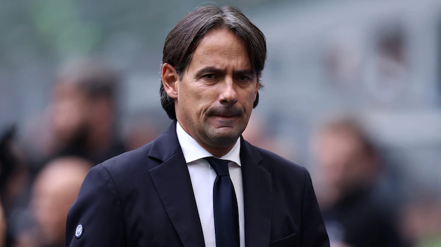
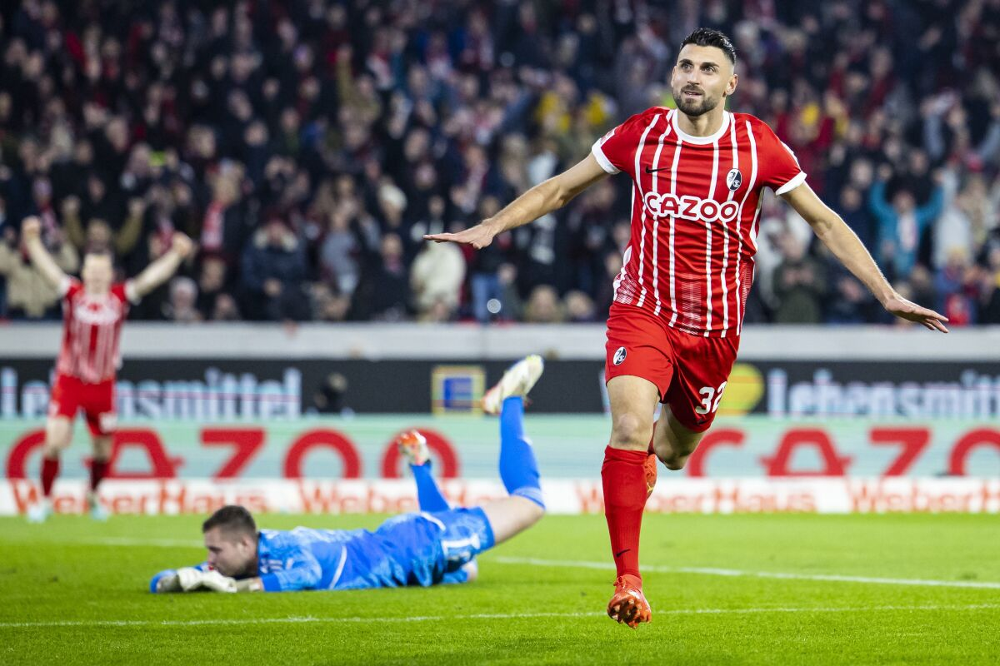
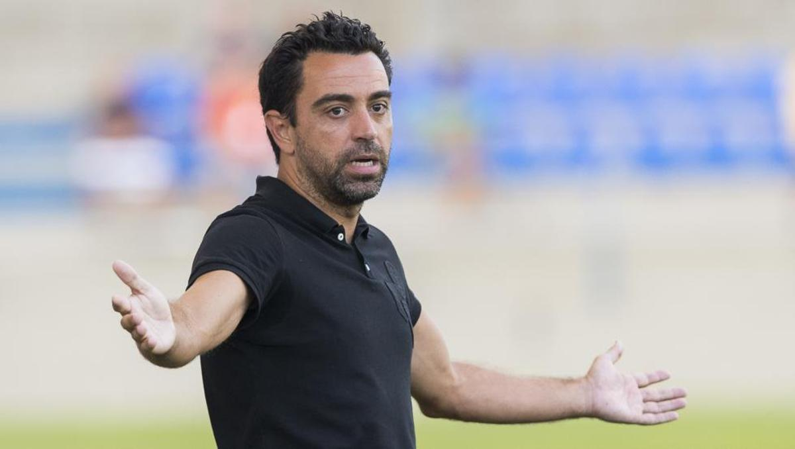

Noticias
LA LIGA

Karim Benzema vuelve con fuerza tras superar sus lesiones
El actual Balón de Oro marcó los dos goles de la victoria por 0-2 del Real Madrid sobre el Real Valladolid, demostrando que está listo para la segunda parte de la temporada de LaLiga Santander
PREMIER LEAGUE

Tras el pase frenado de Enzo Fernández, Chelsea cerró el fichaje de Benoît Badiashile
Si bien los Blues no pudieron llegar a un acuerdo con Benfica por el volante de la Selección Argentina, en las últimas horas sí lo hicieron con Mónaco para incorporar al defensor central de 21 años.
LIGUE ONE
Messi y su vuelta al PSG tras ganar el Mundial
Luego de ganar la Copa del mundo en Qatar, el jugador argentino se incorporó al PSG para retomar los entrenamientos donde fue recibido por todos sus compañeros, con excepción de Mbappé por motivos de vacaciones.
SERIE A
Inzaghi ve muy difícil pelear el Scudetto: "El Napoli está jugando un campeonato aparte"
Inter de Milán cayó sorpresivamente por 1-0 ante Empoli este lunes y, culminada su primera rueda, se ubica en la tercera colocación de la Serie A, a 13 puntos del líder del torneo, el Napoli de Luciano Spalletti.
BUNDESLIGA
Union Berlín consigue los tres puntos tras vencer 2-1 a Werder Bremen
Werder Bremen afrontó el partido con ganas de remontar su puntuación en la clasificación tras perder el último partido frente a Colonia por un marcador de 7-1, acumulando un total de tres derrotas seguidas en la competición.
LA LIGA
Xavi: "Si no ganamos al Girona, será otra hecatombe"
Xavi Hernández considera que su equipo atraviesa un gran momento, pero no se duerme en los laureles. Sabe cómo funcionan las cosas en Can Barça y que en cualquier momento pueden volver las críticas. Por eso no se fía del partido en Montilivi.